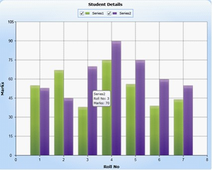

Essential Chart Silverlight now supports creating a customized ToolTip on a chart segment.
Adding Customizable Tooltip
The code illustrates how to add customizable Tooltip for chart in XAML.
|
[Xaml]
<!--Initialize the ChartSeries object--> <syncfusion:ChartSeries x:Name="series" Label="Series1" DataSource="{StaticResource data1}" BindingPathX="RollNo" BindingPathsY="Mark" EnableEffects="True" >
<!--Initialize the Tooltip content information--> <ToolTipService.ToolTip> <ToolTip Content="{Binding currSegment.DataPoint.X}" Template="{ StaticResource CustomToolTip}"/> </ToolTipService.ToolTip> </syncfusion:ChartSeries> |
The following code illustrates how to set the Template for Tooltip.
|
[Xaml]
<!--Template design for Chart Series tool tip, which display Series information and Segment insormation such as X and Y data points values--> <ControlTemplate x:Key="CustomToolTip">
<!--To display all the tool tip information inside the rounded rectangle boundry by setting the BorderTickness as 2 and initialize the border color in BorderBrush property. The Padding property is used to give the space between rectangle and the tool tip content.--> <Border CornerRadius="5" Background="{StaticResource ToolipBG}" Padding="3" BorderBrush="#767676" BorderThickness="2"> <!--This Stackpanel arranges the Series Label, X and Y data points values in line by line(i.e Vertically arrange the elements)--> <StackPanel> <!--To Display the Series label information in TextBlock Text property by binding the Label property of Series class into Text property of TextBlock --> <TextBlock Text="{Binding currSegment.Series.Label}"/>
<!--Arranging the Header of tooltip information and Chart data point X value side by side(i.e Horizontally arrange the elements) --> <StackPanel Orientation="Horizontal"> <!--Display Header of information about the X data point value to be display on tooltip--> <TextBlock Text="Roll No: "/> <!--Binding the value of X property in DataPoint instance into the Text property of TextBlock control. Here currSegment is the property which contain whole information about particular segment.--> <TextBlock Text="{Binding currSegment.DataPoint.X}" /> </StackPanel>
<!--Arranging the Header of tooltip information and Chart data point Y value side by side(i.e Horizontally arrange the elements) --> <StackPanel Orientation="Horizontal"> <!--Display Header of information about the Y data point value to be display on tooltip--> <TextBlock Text="Marks: " /> <!--Binding the value of Y property in DataPoint instance into the Text property of TextBlock control. Here currSegment is the property which contain whole information about particular segment.--> <TextBlock Text="{Binding currSegment.DataPoint.Y}" /> </StackPanel> </StackPanel> </Border> </ControlTemplate>
|
The code illustrates how to add customizable Tooltip for chart in C#.
|
[C#]
Object obj="ToolTip For Series1"; ToolTipService.SetToolTip(this.chart.Areas[0].Series[0], obj); obj = "ToolTip For Series2"; ToolTipService.SetToolTip(this.chart.Areas[0].Series[1], obj); |
When the code runs, the following output displays.

Figure 74: Tooltip